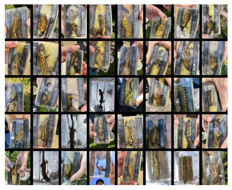
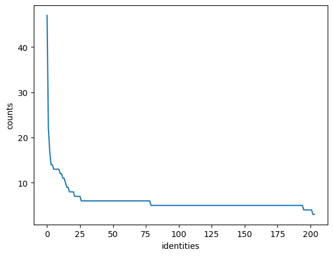
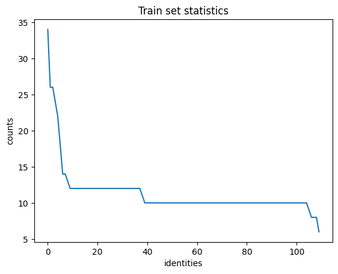
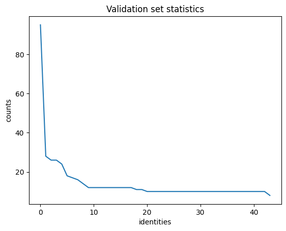
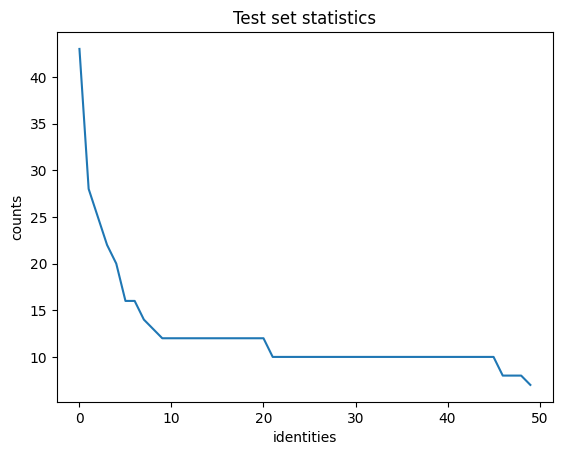

import numpy as np # linear algebra
import pandas as pd # data processing, CSV file I/O (e.g. pd.read_csv)
import ramda as R
import os
import shutil
from pathlib import Path
from wildlife_datasets import datasets, analysis, splits
from tqdm import tqdm
import matplotlib.pyplot as pltNewt Dataset Preparation
This notebook is used to prepare the newt dataset for training and evaluation.
download_kaggle_dataset
download_kaggle_dataset (dataset_name, download_path)
download_kaggle_dataset("mshahoyi/bar-hill-surveys", "./data/barhill-unprocessed")Dataset already exists at ./data/barhill-unprocessed'./data/barhill-unprocessed'data_root = Path("./data/barhill-unprocessed")/'Bar Hill Surveys 2024'
walk = list(os.walk(data_root))
walk[:4][('data/barhill-unprocessed/Bar Hill Surveys 2024',
['Survey 5 06_06_24',
'Survey 7 12_06_24',
'Survey 2 10_05_24',
'Survey 1 09_05_24',
'Survey 6 07_06_24',
'Survey 3 16_05_24',
'Survey 8 13_06_24',
'Survey 4 17_05_24'],
['Bar Hill GCN Survey Results 2024.xlsx',
'ARU Research poster A1 (003) Ecoacoustics researching at Cambridge crematorium_edit (002).png',
'GCN Surveys at Cambridge Crematorium 2024.docx']),
('data/barhill-unprocessed/Bar Hill Surveys 2024/Survey 5 06_06_24',
['Pond 4', 'Pond 3', 'Pond 2'],
[]),
('data/barhill-unprocessed/Bar Hill Surveys 2024/Survey 5 06_06_24/Pond 4',
['GCN1-P4-S5'],
[]),
('data/barhill-unprocessed/Bar Hill Surveys 2024/Survey 5 06_06_24/Pond 4/GCN1-P4-S5',
[],
['IMG_3558.MOV',
'IMG_3551.MOV',
'IMG_3553.MOV',
'IMG_3555.JPEG',
'IMG_3556.JPEG',
'IMG_3556.MOV',
'IMG_3554.JPEG',
'IMG_3557.JPEG',
'IMG_3552.MOV',
'IMG_3551.JPEG',
'IMG_3557.MOV',
'IMG_3552.JPEG',
'IMG_3555.MOV',
'IMG_3553.JPEG',
'IMG_3554.MOV',
'IMG_3558.JPEG'])]gcns = R.filter(lambda x: 'gcn' in os.path.basename(x[0]).lower(), walk) #
gcns[:2][('data/barhill-unprocessed/Bar Hill Surveys 2024/Survey 5 06_06_24/Pond 4/GCN1-P4-S5',
[],
['IMG_3558.MOV',
'IMG_3551.MOV',
'IMG_3553.MOV',
'IMG_3555.JPEG',
'IMG_3556.JPEG',
'IMG_3556.MOV',
'IMG_3554.JPEG',
'IMG_3557.JPEG',
'IMG_3552.MOV',
'IMG_3551.JPEG',
'IMG_3557.MOV',
'IMG_3552.JPEG',
'IMG_3555.MOV',
'IMG_3553.JPEG',
'IMG_3554.MOV',
'IMG_3558.JPEG']),
('data/barhill-unprocessed/Bar Hill Surveys 2024/Survey 5 06_06_24/Pond 3/GCN2-P3-S5',
[],
['IMG_3564.JPEG',
'IMG_3565.MOV',
'IMG_3565.JPEG',
'IMG_3563.MOV',
'IMG_3561.MOV',
'IMG_3566.JPEG',
'IMG_3564.MOV',
'IMG_3562.MOV',
'IMG_3561.JPEG',
'IMG_3563.JPEG',
'IMG_3566.MOV',
'IMG_3562.JPEG'])]data = [(os.path.basename(root), R.map(lambda f: os.path.join(root, f), files)) for root, _, files in gcns]
dict(data[:2]){'GCN1-P4-S5': ['data/barhill-unprocessed/Bar Hill Surveys 2024/Survey 5 06_06_24/Pond 4/GCN1-P4-S5/IMG_3558.MOV',
'data/barhill-unprocessed/Bar Hill Surveys 2024/Survey 5 06_06_24/Pond 4/GCN1-P4-S5/IMG_3551.MOV',
'data/barhill-unprocessed/Bar Hill Surveys 2024/Survey 5 06_06_24/Pond 4/GCN1-P4-S5/IMG_3553.MOV',
'data/barhill-unprocessed/Bar Hill Surveys 2024/Survey 5 06_06_24/Pond 4/GCN1-P4-S5/IMG_3555.JPEG',
'data/barhill-unprocessed/Bar Hill Surveys 2024/Survey 5 06_06_24/Pond 4/GCN1-P4-S5/IMG_3556.JPEG',
'data/barhill-unprocessed/Bar Hill Surveys 2024/Survey 5 06_06_24/Pond 4/GCN1-P4-S5/IMG_3556.MOV',
'data/barhill-unprocessed/Bar Hill Surveys 2024/Survey 5 06_06_24/Pond 4/GCN1-P4-S5/IMG_3554.JPEG',
'data/barhill-unprocessed/Bar Hill Surveys 2024/Survey 5 06_06_24/Pond 4/GCN1-P4-S5/IMG_3557.JPEG',
'data/barhill-unprocessed/Bar Hill Surveys 2024/Survey 5 06_06_24/Pond 4/GCN1-P4-S5/IMG_3552.MOV',
'data/barhill-unprocessed/Bar Hill Surveys 2024/Survey 5 06_06_24/Pond 4/GCN1-P4-S5/IMG_3551.JPEG',
'data/barhill-unprocessed/Bar Hill Surveys 2024/Survey 5 06_06_24/Pond 4/GCN1-P4-S5/IMG_3557.MOV',
'data/barhill-unprocessed/Bar Hill Surveys 2024/Survey 5 06_06_24/Pond 4/GCN1-P4-S5/IMG_3552.JPEG',
'data/barhill-unprocessed/Bar Hill Surveys 2024/Survey 5 06_06_24/Pond 4/GCN1-P4-S5/IMG_3555.MOV',
'data/barhill-unprocessed/Bar Hill Surveys 2024/Survey 5 06_06_24/Pond 4/GCN1-P4-S5/IMG_3553.JPEG',
'data/barhill-unprocessed/Bar Hill Surveys 2024/Survey 5 06_06_24/Pond 4/GCN1-P4-S5/IMG_3554.MOV',
'data/barhill-unprocessed/Bar Hill Surveys 2024/Survey 5 06_06_24/Pond 4/GCN1-P4-S5/IMG_3558.JPEG'],
'GCN2-P3-S5': ['data/barhill-unprocessed/Bar Hill Surveys 2024/Survey 5 06_06_24/Pond 3/GCN2-P3-S5/IMG_3564.JPEG',
'data/barhill-unprocessed/Bar Hill Surveys 2024/Survey 5 06_06_24/Pond 3/GCN2-P3-S5/IMG_3565.MOV',
'data/barhill-unprocessed/Bar Hill Surveys 2024/Survey 5 06_06_24/Pond 3/GCN2-P3-S5/IMG_3565.JPEG',
'data/barhill-unprocessed/Bar Hill Surveys 2024/Survey 5 06_06_24/Pond 3/GCN2-P3-S5/IMG_3563.MOV',
'data/barhill-unprocessed/Bar Hill Surveys 2024/Survey 5 06_06_24/Pond 3/GCN2-P3-S5/IMG_3561.MOV',
'data/barhill-unprocessed/Bar Hill Surveys 2024/Survey 5 06_06_24/Pond 3/GCN2-P3-S5/IMG_3566.JPEG',
'data/barhill-unprocessed/Bar Hill Surveys 2024/Survey 5 06_06_24/Pond 3/GCN2-P3-S5/IMG_3564.MOV',
'data/barhill-unprocessed/Bar Hill Surveys 2024/Survey 5 06_06_24/Pond 3/GCN2-P3-S5/IMG_3562.MOV',
'data/barhill-unprocessed/Bar Hill Surveys 2024/Survey 5 06_06_24/Pond 3/GCN2-P3-S5/IMG_3561.JPEG',
'data/barhill-unprocessed/Bar Hill Surveys 2024/Survey 5 06_06_24/Pond 3/GCN2-P3-S5/IMG_3563.JPEG',
'data/barhill-unprocessed/Bar Hill Surveys 2024/Survey 5 06_06_24/Pond 3/GCN2-P3-S5/IMG_3566.MOV',
'data/barhill-unprocessed/Bar Hill Surveys 2024/Survey 5 06_06_24/Pond 3/GCN2-P3-S5/IMG_3562.JPEG']}metadata = pd.DataFrame(data).explode(1)
metadata.columns = ["identity", "file_path"]
metadata.shape(2504, 2)metadata.head()| identity | file_path | |
|---|---|---|
| 0 | GCN1-P4-S5 | data/barhill-unprocessed/Bar Hill Surveys 2024... |
| 0 | GCN1-P4-S5 | data/barhill-unprocessed/Bar Hill Surveys 2024... |
| 0 | GCN1-P4-S5 | data/barhill-unprocessed/Bar Hill Surveys 2024... |
| 0 | GCN1-P4-S5 | data/barhill-unprocessed/Bar Hill Surveys 2024... |
| 0 | GCN1-P4-S5 | data/barhill-unprocessed/Bar Hill Surveys 2024... |
metadata.info()<class 'pandas.core.frame.DataFrame'>
Index: 2504 entries, 0 to 206
Data columns (total 2 columns):
# Column Non-Null Count Dtype
--- ------ -------------- -----
0 identity 2504 non-null object
1 file_path 2504 non-null object
dtypes: object(2)
memory usage: 58.7+ KBmetadata['file_name'] = metadata['file_path'].apply(lambda x: os.path.basename(x))
metadata['is_video'] = metadata['file_name'].apply(lambda x: 'mov' in x.lower())
metadata.head()| identity | file_path | file_name | is_video | |
|---|---|---|---|---|
| 0 | GCN1-P4-S5 | data/barhill-unprocessed/Bar Hill Surveys 2024... | IMG_3558.MOV | True |
| 0 | GCN1-P4-S5 | data/barhill-unprocessed/Bar Hill Surveys 2024... | IMG_3551.MOV | True |
| 0 | GCN1-P4-S5 | data/barhill-unprocessed/Bar Hill Surveys 2024... | IMG_3553.MOV | True |
| 0 | GCN1-P4-S5 | data/barhill-unprocessed/Bar Hill Surveys 2024... | IMG_3555.JPEG | False |
| 0 | GCN1-P4-S5 | data/barhill-unprocessed/Bar Hill Surveys 2024... | IMG_3556.JPEG | False |
Merging and deleting images
gcns_to_merge = [
("GCN10-P7-S8", "GCN11-P7-S8", "GCN13-P7-S8"),
("GCN53-P2-S4", "GCN52-P2-S4"),
]
files_to_delete = [
("GCN54-P2-S2", "IMG_2665.JPEG"),
]print(f"Number of identities before merging: {metadata.identity.nunique()}")
for merge_group in gcns_to_merge:
metadata.loc[metadata.identity.isin(merge_group[1:]), 'identity'] = merge_group[0]
print(f"Number of identities after merging: {metadata.identity.nunique()}")Number of identities before merging: 207
Number of identities after merging: 204print(f"Number of files before deleting: {metadata.file_name.nunique()}")
for gcn_id, file_name in files_to_delete:
metadata = metadata[~((metadata.identity == gcn_id) & (metadata.file_name == file_name))]
print(f"Number of files after deleting: {metadata.file_name.nunique()}")Number of files before deleting: 2473
Number of files after deleting: 2472class UnprocessedNewtsDataset(datasets.WildlifeDataset):
def create_catalogue(self) -> pd.DataFrame:
return metadata[~metadata.is_video].rename(columns={"file_name": "image_name", "file_path": "path"})dataset = UnprocessedNewtsDataset('.')
dataset.plot_grid()

Split the dataset
analysis.display_statistics(dataset.df)Number of identitites 204
Number of all animals 1252
Number of animals with one image 0
Number of unidentified animals 0
def create_train_test_split(df, split_ratio=0.5):
disjoint_splitter = splits.DisjointSetSplit(split_ratio)
for idx_train, idx_test in disjoint_splitter.split(df):
df_train, df_test = df.loc[idx_train], df.loc[idx_test]
splits.analyze_split(df, idx_train, idx_test)
return df_train.reset_index(drop=True), df_test.reset_index(drop=True)
df_train, df_test = create_train_test_split(dataset.df, split_ratio=0.5)
df_test, df_val = create_train_test_split(df_test, split_ratio=0.5)
print(f"Train: {len(df_train)}, Test: {len(df_test)}, Validation: {len(df_val)}")Split: time-unaware disjoint-set
Samples: train/test/unassigned/total = 625/627/0/1252
Classes: train/test/unassigned/total = 110/94/0/204
Samples: train only/test only = 625/627
Classes: train only/test only/joint = 110/94/0
Fraction of train set = 49.92%
Fraction of test set only = 50.08%
Split: time-unaware disjoint-set
Samples: train/test/unassigned/total = 312/315/0/627
Classes: train/test/unassigned/total = 50/44/0/94
Samples: train only/test only = 312/315
Classes: train only/test only/joint = 50/44/0
Fraction of train set = 49.76%
Fraction of test set only = 50.24%
Train: 625, Test: 312, Validation: 315df_train.head()| identity | path | image_name | is_video | |
|---|---|---|---|---|
| 0 | GCN1-P1-S2 | data/barhill-unprocessed/Bar Hill Surveys 2024... | IMG_2312.JPEG | False |
| 1 | GCN1-P1-S2 | data/barhill-unprocessed/Bar Hill Surveys 2024... | IMG_2310.JPEG | False |
| 2 | GCN1-P1-S2 | data/barhill-unprocessed/Bar Hill Surveys 2024... | IMG_2309.JPEG | False |
| 3 | GCN1-P1-S2 | data/barhill-unprocessed/Bar Hill Surveys 2024... | IMG_2311.JPEG | False |
| 4 | GCN1-P1-S2 | data/barhill-unprocessed/Bar Hill Surveys 2024... | IMG_2313.JPEG | False |
output_dir = Path("./data/gcns-processed")
train_dir = output_dir/"train"
val_dir = output_dir/"val"
test_dir = output_dir/"test"
shutil.rmtree(output_dir, ignore_errors=True)
Path(output_dir).mkdir(exist_ok=True)
Path(train_dir).mkdir(exist_ok=True)
Path(val_dir).mkdir(exist_ok=True)
Path(test_dir).mkdir(exist_ok=True)train_ids = df_train.identity.unique()
val_ids = df_val.identity.unique()
test_ids = df_test.identity.unique()metadata_new = metadata.copy()
for i, row in tqdm(metadata_new.iterrows()):
if row.identity in train_ids:
split = 'train'
elif row.identity in val_ids:
split = 'val'
elif row.identity in test_ids:
split = 'test'
else:
raise ValueError(f"Unknown identity: {row.identity}")
new_path = Path(split)/row.identity/row.file_name
Path(output_dir/new_path).parent.mkdir(parents=True, exist_ok=True)
shutil.copy(row.file_path, output_dir/new_path)
metadata_new.loc[i, 'split'] = split
metadata_new.loc[i, 'file_path'] = new_path
metadata_new.head()2503it [00:06, 380.40it/s]| identity | file_path | file_name | is_video | split | |
|---|---|---|---|---|---|
| 0 | GCN1-P4-S5 | test/GCN1-P4-S5/IMG_3558.JPEG | IMG_3558.MOV | True | test |
| 0 | GCN1-P4-S5 | test/GCN1-P4-S5/IMG_3558.JPEG | IMG_3551.MOV | True | test |
| 0 | GCN1-P4-S5 | test/GCN1-P4-S5/IMG_3558.JPEG | IMG_3553.MOV | True | test |
| 0 | GCN1-P4-S5 | test/GCN1-P4-S5/IMG_3558.JPEG | IMG_3555.JPEG | False | test |
| 0 | GCN1-P4-S5 | test/GCN1-P4-S5/IMG_3558.JPEG | IMG_3556.JPEG | False | test |
Display Statistics
metadata_new.split.value_counts()split
train 1249
val 632
test 622
Name: count, dtype: int64metadata_new.to_csv("./data/gcns-processed/metadata.csv", index=False)print("Number of identities in each split:")
metadata_new.groupby('split').identity.nunique()Number of identities in each split:split
test 50
train 110
val 44
Name: identity, dtype: int64print("Number of files in each split (including videos):")
metadata_new.groupby('split').file_name.nunique()Number of files in each split (including videos):split
test 601
train 1249
val 622
Name: file_name, dtype: int64print("Number of images and videos:")
metadata_new.is_video.value_counts()Number of images and videos:is_video
False 1252
True 1251
Name: count, dtype: int64analysis.display_statistics(metadata_new[metadata_new.split == 'train'])
plt.title('Train set statistics')
plt.savefig('./data/gcns-processed/train_statistics.png')
plt.show()
plt.close()Number of identitites 110
Number of all animals 1249
Number of animals with one image 0
Number of unidentified animals 0
analysis.display_statistics(metadata_new[metadata_new.split == 'val'])
plt.title('Validation set statistics')
plt.savefig('./data/gcns-processed/val_statistics.png')
plt.show()
plt.close()Number of identitites 44
Number of all animals 632
Number of animals with one image 0
Number of unidentified animals 0
analysis.display_statistics(metadata_new[metadata_new.split == 'test'])
plt.title('Test set statistics')
plt.savefig('./data/gcns-processed/test_statistics.png')
plt.show()
plt.close()Number of identitites 50
Number of all animals 622
Number of animals with one image 0
Number of unidentified animals 0
Upload to Kaggle
upload_to_kaggle
upload_to_kaggle (user_id, title, id, licenses, keywords, dataset_dir)
upload_to_kaggle(user_id="mshahoyi",
title="Barhill Great Crested Newts",
id="barhill-newts-all",
licenses=[{"name": "CC0-1.0"}],
keywords=["biology", "computer-vision", "animals", "great crested newts"],
dataset_dir="./data/gcns-processed")import nbdev; nbdev.nbdev_export()